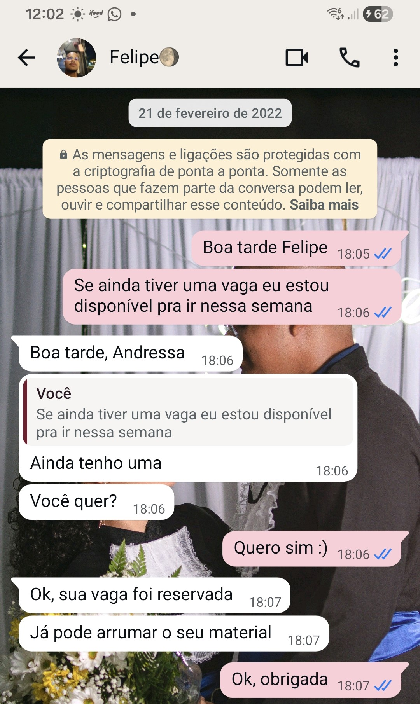

21/02/2022
Foi a primeira vez que entramos em contato
Estávamos no final da pandemia, voltando para o IFBA depois de um ano inteiro de aula à distancia.
Ainda nem nos conhecíamos e a única impressão que tinha de você até então era que eu achava a sua voz muito bonita.
Ainda guardo a memória das nossas primeiras conversas sobre plantas, desenhos, filmes animados, trocando fotos da lua.
Desde o início eu te admirava, o seu carinho, a sua sensibilidade, a sua forma de se expressar, sua atenção com as pessoas. Eu te amo mais que tudo nesse mundo, felipe ❤️.